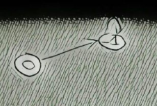
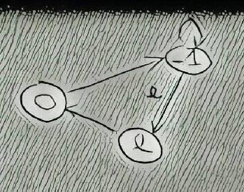
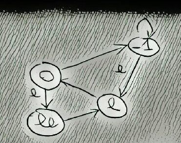
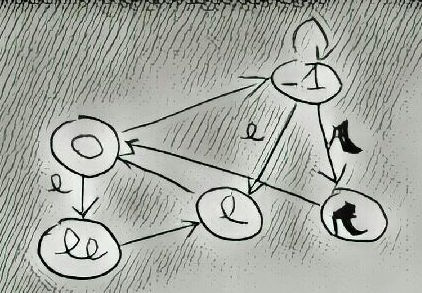
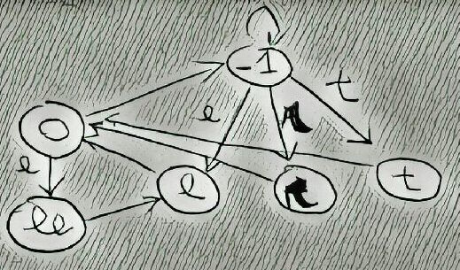
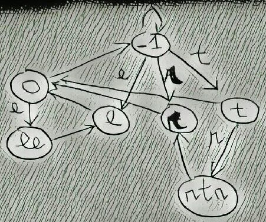
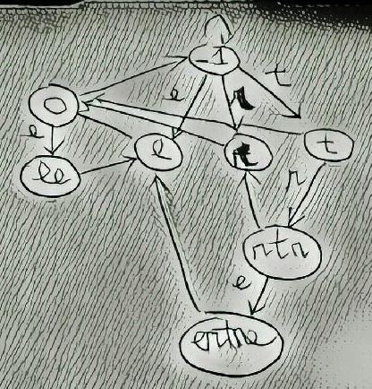
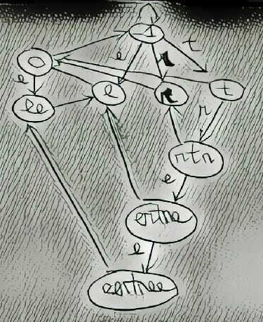

Today I want to talk about a data structure called eertree but also known as palindromic tree.
This data structure got my attention in the first place not because it's fast and versatile in tackling problems involving palindromic substrings, but because it is very very recent.
Most of the algorithms and data structures we use are 40, 50 or even more years old. In this famous Coursera algorithms MOOC about algorithms, Stanford Professor Tim Roughgarden call "recent" the Karger's algorithm for calculating min cuts in a graph, and it is an algorithm well over 20 years old!
Considering this, I was kind of shocked when I stumbled upon this data structure and the related algorithm, because they have been invented around 2014 by Mikhail Rubinchik and presented in an academic paper for the first time in 2015 (!!!).
I wrote this article trying to understand better how to implement the data structure, and hoping it will help other people doing so. I have added a not-best-performance-but-good-readibility algorithm implementation on github, and also you can find below some step-by-step illustrations about the algorithm behaviour.
This data structure allows to keep track of palindrome substrings (also in an online fashion) in linear time and space (truth be told the time complexity is O(n*log(a)), where a is the size of the alphabet, but an alphabet usually contains a limited number of symbols, so we can consider log(a) a constant factor and hence the linear time O(n) ).
The eertree for a given string is a directed graph with N+2 nodes, where N is the number of the distinct palindrome substring found in the initial string, and 2 are the degenerate palindromes that represents the roots of the graph (more details about the 2 root nodes below, where I guide you through the step-by-step example.
For every node it is mandatory to store the length of the palindrome substring, but also additional informations such as the occurrences can be stored, for example if you need to know the total number of palindrome substrings including the duplicate ones. The nodes are linked each other using two different type of edges:
Computing the eertree of a string, while we scan through the characters composing the string, requires also to keep track of the last palindrome node added to the graph. So in total we will need this last node reference, plus the space for storing the graph composed by N+2 nodes, N labeled edges (every node must have exactly one incoming) and N unlabeled edges (every node bust have one outgoing): the anticipated linear space requirements are confirmed.
I will now describe step-by-step the execution of the algorithm in order to create an eertree that stores all the distinct palindrome substrings of the string "eertree":
Step 1: Initialisation
Initialize the eertree adding the two roots: one representing the empty string (length 0), and the other representing an imaginary string with length -1.
The "suffix links" (the unlabeled edges) for the two nodes are both pointing towards the imaginary node. This node will be used a stop point during the backwards traversing of the tree later in the algorithm's execution.
There are no labeled edges out from the two nodes yet, but we will add the edges while we scan through the string.
The reference to the current largest palindrome substring suffix (for convenience I will call this suffix cursor from now on) points to the empty string.
Step 2: Adding [e] from [e]ertree to the data structure
We need to find the the next palindrome eXe to insert in the eertree: this is done through a process by that looks for the longest valid palindrome prefix X traversing the graph starting from the suffix cursor and moving upwards using the unlabeled nodes or "suffix links".
We start with X=[EmptyString], but e[EmptyString]e=ee is a palindrome but not the one we are looking for. We then use the suffix link from the [EmptyString] to the imaginary string: since the imaginary string it's theoretically centered at -1, we don't care about the "e" to prepend before the -1 position and we just care about the "e" appended at position 0, resulting in a new palindrome "e". We add then the new palindrome (a new node) "e" to the eertree, with a labeled edge "e" going from the longest prefix (the imaginary string node) to the new node.
We have now to set the suffix link for the new node: it represents the longest proper palindrome suffix eYe for the new palindrome "e" (proper means that it should be different from the whole palindrome).
Again, we obtain it by moving upwards on the eertree nodes through the suffix link: this time we start from the suffix link of the palindrome prefix used to build the new node: suffix([Immaginary String])=[Imaginary String]: in this case we apply a special rule (the base rule will be explained in the step 3) that is "whenever we should put the imaginary string as suffix link we replace it with the empty string instead".
We now update the reference to the largest inserted suffix palindrome to the new node "e" and we proceed to inserting the next letter in the eertree.
Step 3: Adding [e] from e[e]rtree to the data structure
The largest palindrome prefix X such that eXe is palindrome is now the empty string, so we add the new node "ee" and a labeled edge "e" from the empty string to the new node.
The largest palindrome suffix Y such that eYe is palindrome is obtained traversing the graph backwards using the suffix links, starting from the suffix link of Y (the imaginary string): in this case prepending and appending "e" to the imaginary string we obtain a proper palindrome suffix for "ee", that is "e": this will be the suffix link for "ee".
We now update the reference to the largest inserted suffix palindrome to the new node "ee" and we proceed to inserting the next letter in the eertree.
Step 4: Adding [r] from ee[r]tree to the data structure
We start with X="ee" (largest inserted suffix palindrome) and we check if rXr is a palindrome substring of "eer" (portion of the string examined so far). It is not, so we traverse the graph back: rXr is not a palindrome substring either for X=e (suffix link from X=ee), X=[Empty String] (suffix link from X=e), and we fall back to the special case with largest palindrome prefix equal to the imaginary string, already explained in step 2.
The new palindrome will be "r", we find the suffix link in the same way it has been done for the "e" palindrome (that is applying the special rule and setting it to [EmptyString], then we update the reference to the largest inserted suffix palindrome to the new node "r" and we proceed to inserting the next letter in the eertree.
Step 5: Adding [t] from eer[t]ree to the data structure
We are in the same situation as before, the largest palindrome prefix is the imaginary string, we add a new node "t", and the largest palindrome suffix of "t" the empty string.
We update the reference to the largest inserted suffix palindrome to the new node "t" and we proceed to inserting the next letter in the eertree.
Step 6: Adding [r] from eert[r]ee to the data structure
Finally things start to get interesting: for X=t rXr is a valid palindrome suffix, so can insert a new node representing the palindrome "rtr", and from the largest palindrome prefix X=t we draw an edge to the new node "rtr" with label "r".
We then look for the largest proper palindrome suffix rYr of "rtr": we start with for Y=suffix link(X)=suffix link (t)=[Empty String]: r[EmptyString]r is not a valid palindrome suffix, so we traverse back the suffix link: set Y=suffix link([Empty String])=[Imaginary String]. In this case r[ImaginaryString]r is a proper palindrome substring: it corresponds to the palindrome "r", so the suffix link for "rtr" will be an unlabeled edge going from "rtr" to "r".
We now update the reference to the largest inserted suffix palindrome to the new node "rtr" and we proceed to inserting the next letter in the eertree.
Step 7: Adding [e] from eertr[e]e to the data structure
For X=rtr eXe is a valid palindrome suffix, so we can insert in the eertree a new palindrome node "ertre". From the node representing the largest palindrome prefix X=rtr we draw a labeled edge "e" to the new node "ertre".
We then look for the largest proper palindrome suffix eYe of "ertre": we start with for Y=suffix link(X)=suffix link (rtr)=r : e[r]e is not a valid palindrome suffix, so we traverse back the suffix link (Y=suffix link(r)=suffix link(empty string): in this case e[empty string]e is a palindrome, but we can't get it because "ee" is not a suffix of "ertre": for Y=suffix link ([Empty String])=[Imaginary String] we get the palindrome suffix "e", drawing a suffix link from "ertre" to it.
We then update the reference to the largest inserted suffix palindrome to the new node "ertre".
Step 8: Adding [e] from eertre[e] to the data structure
For X=ertre eXe is a valid palindrome suffix, so can insert a new node for the palindrome "eertree", and from the node representing the largest palindrome prefix X=ertre we draw a labeled edge "e" to the new node.
We then look for the largest proper palindrome suffix eYe of "eertree": we start with Y=suffix link(X)=suffix link (ertre)=e, but e[e]e is not a valid palindrome suffix, so we traverse back the suffix link: (Y=suffix link(e)=suffix link([Empty String]). Now e[Empty String]e is the palindrome "ee" and unlike in step 7 it is a suffix of our palindrome: we can draw a suffix link from "eertree" to it.
With this we have run out of new letters, so all the distinct palindromes has been added to the data structure.
I have wrote a Java implementation of the algorithm, since the other implementations around are in C++ and mostly focused on efficiency and not readibility. My version is pretty bad as far as additional space required (and probably speed), but I hope it can be useful to understand the algorithm for non C++ people.